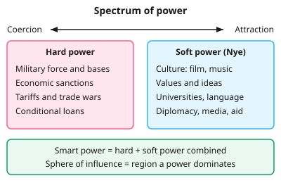

A-level Geography Year 13 · Topic 16
Superpowers
Superpowers explores which countries dominate the world, how their power changes, and what that means for everyone.
We will define superpowers and their hard and soft power, and trace how the hierarchy has changed.
Then we look at superpowers' influence on global governance, trade, conflict, the environment, and the future of global power.
- 8 subtopics
- 342 questions
- Free: 16.1 notes and 10 questions
In this topic
- 16.1Defining superpowers: characteristics, hard and soft power and spheres of influenceFree below · 40 questions
- 16.2Changing superpower hierarchy: historical rise and decline, USA, China and emerging powersOpen in Full Marks · 23 questions
- 16.3Factors in superpower emergence: economy, population, resources, technology and geographyOpen in Full Marks · 68 questions
- 16.4Superpowers and global governance: hegemony, IGO influence and geopolitical strategyOpen in Full Marks · 44 questions
- 16.5Superpowers, trade and investment: TNCs, Belt and Road, aid and cultural influenceOpen in Full Marks · 28 questions
- 16.6Superpowers and conflict: Cold War legacy, proxy conflicts and flashpoints such as the South China SeaOpen in Full Marks · 36 questions
- 16.7Environmental and development impacts of superpowers: resource use, emissions and inequalityOpen in Full Marks · 67 questions
- 16.8Future global power: multipolar world, trajectories and uncertaintyOpen in Full Marks · 36 questions
16.1 · Free notes
Defining superpowers: characteristics, hard and soft power and spheres of influence

Key points
- A superpower is a state able to project economic, military, political and cultural influence globally, not just in its own region. The term was first used by William Fox in 1944.
- Typical characteristics: a very large GDP, global military reach (nuclear weapons, blue-water navy, overseas bases), a large population and territory, technological leadership, a UN Security Council veto and cultural reach.
- Hegemony is the dominance of one state over others, through economic, political, military or ideological control. The USA is usually described as the post-1945 hegemon.
- Hard power is the use of coercion to get results: military force, economic sanctions, tariffs, threats and conditional loans. It is quick and visible but costly and can provoke resistance (e.g. Iraq 2003).
- Soft power (coined by Joseph Nye, 1990) is the ability to get others to want what you want, through attraction. It draws on culture (Hollywood), values, universities, language, diplomacy, aid and media. It is slow to build and hard to measure.
- Smart power is the strategic combination of hard and soft power. Superpowers rarely rely on only one form.
- A sphere of influence is a region where one power exerts dominant economic, political, military or cultural influence without formal rule. Examples: the Monroe Doctrine (1823) in the Americas, the Soviet bloc in Eastern Europe, and China in the South China Sea and through the Belt and Road Initiative.
- Polarity describes how power is distributed. Unipolar means one dominant power, bipolar means two (USA and USSR, 1945–91) and multipolar means several. Examiners expect you to link polarity to specific periods.
- Distinguish the categories. A superpower has global reach across all dimensions. Great or regional powers (e.g. India, Brazil, Russia today) dominate a region. Middle powers have influence in particular areas. Emerging powers have fast-growing economies (e.g. BRICS).
- Power is measured with indicators: GDP (nominal and PPP), military spending (% of GDP or US$), share of world trade, HDI and soft power indices such as the Brand Finance Global Soft Power Index. Be able to calculate shares and percentages from data.
- Evaluation tip: hard power is effective but expensive and can create backlash. Soft power is cheaper but slow, and it depends on a state's policies being seen as legitimate. Power is relative, so it changes over time.
In more detail
- Hard power: the USA spends close to $1 trillion a year on its military, over a third of all global military spending.
- Soft power: Joseph Nye's idea that countries can attract others through culture, values and policies, from Hollywood to world-leading universities.
- Smart power: combining hard and soft power effectively.
- Spheres of influence: Russia's "near abroad" and, historically, the USA's influence across the Americas.
- Geopolitical theory: Mackinder's 1904 "Heartland" theory argued that controlling central Eurasia was key to world power.
Practice
Defining superpowers: characteristics, hard and soft power and spheres of influence: 10 questions
Pick an answer to check it, or open the answer for the explanation.
1. Which political scientist developed the concept of 'soft power' in 1990?
- Samuel Huntington
- Paul Kennedy
- Joseph Nye
- Halford Mackinder
Show answer
C: Joseph Nye. Joseph Nye coined 'soft power': the ability to shape others' preferences through attraction (culture, values, policies) rather than coercion or payment.
2. Which of the following is the clearest example of hard power?
- A cultural festival held abroad
- Hollywood films shaping global tastes
- Scholarships for overseas students
- Economic sanctions on an oil-exporting state
Show answer
D: Economic sanctions on an oil-exporting state. Sanctions coerce through economic penalties, so they are hard power. Films, scholarships and cultural festivals work by attraction, which is soft power.
3. A sphere of influence is best defined as:
- A territory formally annexed by a larger state
- An ocean area claimed under UNCLOS
- A region dominated by one power without direct rule
- A group of states sharing one currency
Show answer
C: A region dominated by one power without direct rule. A sphere of influence is an area where a power has dominant economic, political or military influence while the states in it remain formally independent.
4. The Monroe Doctrine (1823) was an early USA claim to a sphere of influence over which region?
- The Middle East
- The Americas
- The Pacific Rim
- Western Europe
Show answer
B: The Americas. The Monroe Doctrine warned European powers against further colonisation or intervention in the Americas, establishing the western hemisphere as a US sphere.
5. A state has GDP of $12 trillion and spends $240 billion on defence. What is its military spending as a percentage of GDP?
- 20%
- 5%
- 0.5%
- 2%
Show answer
D: 2%. 240 ÷ 12,000 = 0.02, so 2% of GDP. Remember to convert trillions to billions (1 trillion = 1,000 billion).
6. China funding Confucius Institutes that teach Mandarin and culture abroad is mainly an attempt to build:
- Hard power
- Soft power
- Economic sanctions
- A military alliance
Show answer
B: Soft power. Language and cultural programmes aim to make China attractive and improve its image, which is soft power.
7. Which period is best described as a bipolar world order?
- 1914–1918
- 1815–1914
- 1991–2008
- 1945–1991
Show answer
D: 1945–1991. From 1945 to 1991 the USA and USSR were the two superpowers, with allies in NATO and the Warsaw Pact: a bipolar system.
8. 'Smart power' refers to:
- Reliance on cyber capabilities
- A strategic combination of hard and soft power
- Use of advanced military technology only
- Power from a highly skilled workforce
Show answer
B: A strategic combination of hard and soft power. Smart power, popularised by Nye, is the deliberate blending of coercive (hard) and attractive (soft) tools to achieve foreign policy goals.
9. What best distinguishes a superpower from a regional power?
- Global reach across economic, military, political and cultural spheres
- Possession of nuclear weapons
- Membership of the United Nations
- Having a population over 1 billion
Show answer
A: Global reach across economic, military, political and cultural spheres. Nuclear states like India and Pakistan are regional powers. A superpower projects influence worldwide across several dimensions.
10. A state builds naval bases near its neighbours and offers cheap port loans in return for UN votes. This is mainly an attempt to:
- Join a free-trade area
- Reduce its military spending
- Increase its soft power through culture only
- Extend its sphere of influence using hard and economic power
Show answer
D: Extend its sphere of influence using hard and economic power. Bases (hard power) and loans for diplomatic support (economic leverage) aim to build dominance and alignment in a region, which is extending a sphere of influence.
Keep going in Full Marks
Full Marks has 40 questions on Defining superpowers: characteristics, hard and soft power and spheres of influence (30 more than here), set out in practice levels. You also get notes and 3D models for all 8 subtopics of Superpowers, plus games, timed exams and past papers.
On your exam board
Not in the AQA and Cambridge specifications.